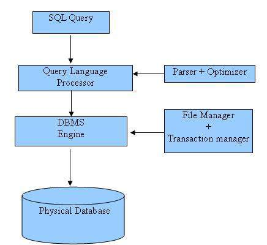

SQL is a database computer language designed for the retrieval and management of data in relational database. SQL stands for Structured Query Language. This tutorial will give you quick start with SQL.
This reference has been prepared for the beginners to help them understand the basic to advanced concepts related to SQL languages.
Before you start doing practice with various types of examples given in this reference, I'm making an assumption that you are already aware about what is database, especially RDBMS and what is a computer programming language.
If you are willing to compile and execute SQL programs with Oracle 11g RDBMS but you do not have a setup for the same, then do not worry. The Coding Ground is available on a high end dedciated server giving you real programming experience. Yes! it is absolutely free and its online.
SQL tutorial gives unique learning on Structured Query Language and it helps to make practice on SQL commands which provides immediate results. SQL is a language of database, it includes database creation, deletion, fetching rows and modifying rows etc. SQL is an ANSI (American National Standards Institute) standard but there are many different versions of the SQL language.
SQL is Structured Query Language, which is a computer language for storing, manipulating and retrieving data stored in relational database. SQL is the standard language for Relation Database System. All relational database management systems like MySQL, MS Access, Oracle, Sybase, Informix, postgres and SQL Server use SQL as standard database language. Also, they are using different dialects, such as: MS SQL Server using T-SQL, Oracle using PL/SQL, MS Access version of SQL is called JET SQL (native format) etc.
Allows users to access data in relational database management systems. Allows users to describe the data. Allows users to define the data in database and manipulate that data. Allows to embed within other languages using SQL modules, libraries & pre-compilers. Allows users to create and drop databases and tables. Allows users to create view, stored procedure, functions in a database. Allows users to set permissions on tables, procedures, and views
1970 -- Dr. Edgar F. "Ted" Codd of IBM is known as the father of relational databases. He described a relational model for databases. 1974 -- Structured Query Language appeared. 1978 -- IBM worked to develop Codd's ideas and released a product named System/R. 1986 -- IBM developed the first prototype of relational database and standardized by ANSI. The first relational database was released by Relational Software and its later becoming Oracle.
When you are executing an SQL command for any RDBMS, the system determines the best way to carry out your request and SQL engine figures out how to interpret the task. There are various components included in the process. These components are Query Dispatcher, Optimization Engines, Classic Query Engine and SQL Query Engine, etc. Classic query engine handles all non-SQL queries but SQL query engine won't handle logical files. Following is a simple diagram showing SQL Architecture: 
The standard SQL commands to interact with relational databases are CREATE, SELECT, INSERT, UPDATE, DELETE and DROP. These commands can be classified into groups based on their nature:
| Command | Description |
|---|---|
| CREATE | Creates a new table, a view of a table, or other object in database |
| ALTER | Modifies an existing database object, such as a table. |
| DROP | Deletes an entire table, a view of a table or other object in the database. |
| Command | Description |
|---|---|
| SELECT | Retrieves certain records from one or more tables |
| INSERT | Creates a record |
| UPDATE | Modifies records |
| DELETE | Deletes records |
| Command | Description |
|---|---|
| GRANT | Gives a privilege to user |
| REVOKE | Takes back privileges granted from user |